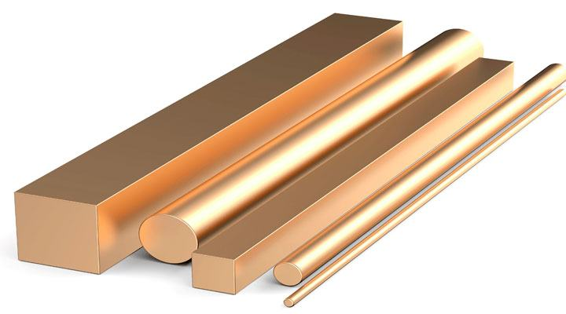
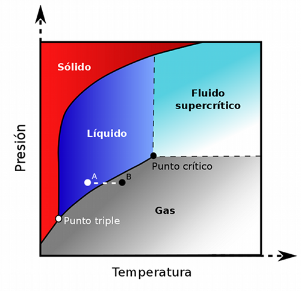
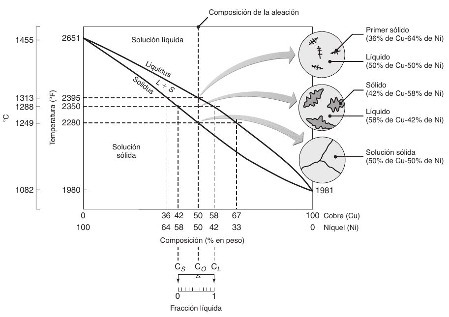
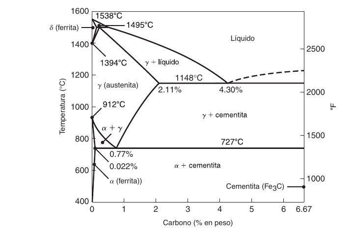
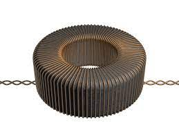

Generalmente cuando se habla de compuestos quimicos se hace referencia a compuestos que son completamente periodicos y que estan formados por los mismos átomos para todo su volumen, en el caso de
la explicacion de cristales y estructuras cristalinas, se suponía que toda la estructura pertenecía a un solo compuesto. En el caso de los metales, también existen variaciones en las que se da que
no toda la estructura esta formada por un solo compuesto, a este tipo de metales se les llama aleaciones y estan formadas por al menos un metal y otro elemento. Tambien puede existir el caso en
que todo el material este compuesto de los mismos átomos através de toda su estructura, y cuando esto ocurre, al metal se le denomina metal puro.
Soluciones sólidas substitucionales e intersticiales
Debido a que las aleaciones estan compuestas de dos materiales diferentes, a cada uno se le denomina con un nombre: Soluto y Solvente, siendo el soluto
aquel elemento que se agrega al solvente para crear la aleacion. Cuando la estructura cristalina del solvente se mantiene durante la aleación, a ésta se le llama solución sólida [184, p. 116] .
De las que se encuentran dos tipos:
Soluciones sólidas substitucionales: En las que el tamaño de los átomos de ambos compuestos es similar y por lo tanto
se sustituye el átomo del solvente con el del soluto sin cambiar la composicion de la estructura. Requieren de dos condiciones llamadas Reglas de Hume-Rothery:
Los dos metales deben tener estructuras cristalinas similares
y la diferencia de sus radios atómicos debe ser menor al 15%
[184, p. 116] Ejemplo: el latón, compuesto por zinc y cobre

Fig. 10.1: El latón
Soluciones sólidas intersticiales: Ocurren cuando el tamaño del soluto es menor al del solvente, con las iguientes condiciones:
El solvente debe tener más de una valencia y el radio atómico del soluto debe ser menor al 59% del radio del solvente.
Ej: el acero
Fig. 10.2: El acero
Fases y sistemas de dos fases
Una fase se define como una porción físicamente distinta y homogénea en un materia [184, p. 117]. Cuando se habla de sistemas de dos fases,
se hace referencia a mezclas en las cuales el soluto y el solvente no se disuelven y son distinguibles, muy similar al concepto de una mezcla heterogenea.
En el caso de las aleaciones, cuando estas tienen dos fases, se refiere a que las particulas del soluto estan 'dispersas por toda la mezcla'. En general, las aleaciones de dos fases son más fuertes y menos dúctiles que las soluciones sólidas.
Diagramas de fase
Los elementos puros tienden a tener puntos de fusión y de solidificación definidos y que ocurren a una temperatura constante, véase el caso del agua:

Fig. 10.3: El agua tiene un diagrama de fase convencional
Pero, a diferencia de estos elementos y de los metales puros, las aleaciones se solidifican en un intervalo de temperaturas, lo que quiere decir que hay puntos en los
que la aleacion no es líquida ni sólida, sino que esta aleación esta en un estado blando o pastoso[184, p. 118]. La aleacion completamente solidificada en una aleación se crea cuando el soluto
se disuelve completamente en el solvente y cada grano tiene la misma composición.

Fig. 10.4: La aleación níquel cobre tiene un punto en el cual no es líquida ni sólida, [184, fig. 4.5]
Para el estudio de estos fenomenos se hace uso de un diagrama de fases,tambien conocido como diagrama de equilibrio o constitucional, como el que se vio en el ejemplo del agua,
pero en las aleaciones, estos no toman en cuenta la presión atmosférica, sino la composición de la aleación. Existen tres tipos de diagramas de fase: (1) soluciones sólidas
completas; (2) eutécticas, como los hierros fundidos; y (3) eutectoides, como los aceros.
Hierro-Carbono
Generalmente, el hierro y el carbono son elementos inseparables, ya que hasta el hierro comercialmente puro contiene un porcentaje de carbono. El siguiente diagrama de fases muestra lo que le ocurre al hierro dependiendo del porcentaje de carbono en este:

Fig. 10.5: Diagrama de fases del hierro-carbono [184, fig. 4.8]
En este diagrama se puede observar que el hierro puro forma ferrita austenita y cementita a diferentes temperaturas:
Ferrita: simplemente ferrita, es una solución sólida de hierro cúbico centrado en el cuerpo. La ferrita delta es estable sólo a temperaturas muy altas y
no tiene importancia práctica en la ingeniería. La ferrita es relativamente suave y dúctil; es magnética en todas las temperaturas hasta la temperatura de Curie (7698 grados centigrados)

Fig. 10.6: La ferrita se utiliza para nucleos de transformadores
Fig. 10.7: La ferrita tiene una estructura cúbica centrada en el cuerpo
Austenita: Dentro de cierto margen de temperatura, el hierro sufre una transformación polimórfica de la estructura bcc a una estructura
fcc para convertirse en hierro gama o (más comúnmente) austenita. Posee buena formabilidad y no es magnética.
Fig. 10.8: La austenita tiene una estructura cúbica centrada en las caras
Cementita: Tambien llamada carburo, es 100% de carburo de hierro Fe3C y tiene un contenido de carbono de 6.67%. es un compuesto intermetálico muy duro
y frágil que tiene una influencia significativa en las propiedades de los aceros. Puede incluir otros elementos de aleación, como cromo, molibdeno y manganeso. [184, p. 123]
Hierros Fundidos
El término hierro fundido se refiere a una familia de aleaciones ferrosas compuestas por
hierro, carbono (que va de 2.11% a casi 4.5%) y silicio (casi hasta 3.5%). Segun su composicion, se clasifican en:
Hierro fundido gris, o hierro gris.
El grafito existe mayormente en la forma de
hojuelas. Tiene una ductilidad despreciable y es de baja resistencia a la tensión (aunque
de alta resistencia a la compresión), esto y la presencia de hojuelas de grafito hacen que sea un metal muy útil para amortiguar vibraciones y por tanto disipar energía.
Hierro dúctil nodular: En la estructura del hierro dúctil, el grafito se encuentra en
forma nodular o esferoidal, la cual permite que el material sea de alguna ma-
nera dúctil y resistente al impacto
Hierro fundido blanco. Su estructura es muy dura, resistente al desgaste y frágil, debido a la presencia de grandes cantidades de carburo de hierro (en lugar de grafito), se obtiene mediante el enfriamiento rápido del hierro gris.
Hierro maleable El hierro maleable se obtiene recociendo hierro fundido blanco en
una atmósfera de monóxido de carbono y bióxido de carbono, a entre 800 °C y 900 °C, tiene una estructura similar a la del hierro nodular. Esta estructura promueve la ductilidad, resistencia y resistencia al impacto
Hierro de grafito compactado En esta estructura, el grafito se encuentra en la forma de hojuelas cortas, gruesas e interconectadas, que tienen superficies onduladas y extremidades redondas.
Tratamieno térmico
Los efectos del
tratamiento térmico dependen de la aleación en particular, su composición y su microestructura, el grado de trabajo previo en frío, así como las velocidades de calentamiento y
de enfriamiento durante el tratamiento térmico. A continuación, sistemas hierro-carbono que se diferencian dependiendo del tipo de tratamiento térmico:
Perlita: dependiendo de la velocidad de enfriamiento, la perlita puede convertirse en perlita fina -con laminillas de ferrita y cementita delgadas y apretadas- cuando el enfriamiento es lento y perlita gruesa cuando el enfriamiento es rápido -con laminillas gruesas y espaciadas-
Esferoidita: Cuando se calienta la perlita debajo de la temperatura euctoide y se mantiene asi por un día, se crea este acero con mayor tenacidad y menor dureza
Bainita: es una microestructura muy fina que consiste en ferrita y cementita, algo similar a la perlítica, pero con
una morfología diferente. Por lo general es más fuerte y dúctil que los aceros perlíticos al mismo nivel de
dureza.
Martensita Cuando la austenita se enfría a alta velocidad, su estructura fcc se transforma en una estructura tetragonal centrada en el cuerpo
(bct), es muy dura y frágil, no tiene tenacidad y, por lo tanto, su uso es limitado
Fig. 10.9: La martensita tiene una estructura tetragonal centrada en l cuerpo
Austenita Retenida: Si la temperatura a la que se enfría la aleación no es lo suficientemente baja, sólo una porción de la estructura se transforma en martensita. El resto es
austenita retenida, puede ocasionar inestabilidad
dimensional y agrietamiento, además de reducir la dureza y resistencia de la aleación.
Martensita revenida: El revenido es un proceso de calentamiento mediante el cual se reduce la dureza y se mejora la tenacidad.
Templabilidad
A la capacidad de endurecimiento de una aleación por medio de tratamiento térmico se
le llama templabilidad. Es una medida de la profundidad de la dureza que se puede obtener mediante calentamiento y enfriamiento posterior. [185, p. 132]
Para hacer una prueba de templabilidad, se utiliza el ensayo de Jominy, que consiste en utilizar una barra redonda de 10 cm de la aleación a medir, calentarla hasta volverla austenita y templar la mitad a 25 grados a diferentes velocidades para medir la dureza del temple.
Tratamiento térmico de aleaciones no ferrosas y aceros inoxidables
Las aleaciones de aluminio y de cobre, los aceros inoxidables martensíticos
y algunos otros aceros inoxidables a los que se puede dar tratamiento térmico, se endurecen y refuerzan mediante un proceso llamado endurecimiento por precipitación. Este
tratamiento térmico es una técnica en la que pequeñas partículas (de una fase diferente y
llamados precipitados) se dispersan de manera uniforme en la matriz de la fase original, que consta de tres fases:
Fig. 10.10: Fases del endurecimiento por precipitacion [184, fig. 4.21]
Tratamiento con solucion
En el tratamiento con solución, la aleación se calienta dentro de la fase kapa de la solución
sólida, digamos 540 °C (1000 °F) y después se enfría rápidamente. Esta aleación tiene resistencia moderada y ductilidad considerable.
Endurecimiento superficial
No es deseable endurecer partes completas porque una parte dura adolece de la tenacidad necesaria para estas aplicaciones; una
pequeña grieta en la superficie se podría propagar con rapidez por toda la parte y provocar
una falla total. Sin embargo, en muchos casos es deseable la alteración exclusiva de las
propiedades superficiales de una parte [184, p. 136]
Los siguientes son los metodos de endurecimiento superficial:
Carburizado (gas, líquido y carburizado en caja)
Carbonitrurado
Cianurado
Nitrurado
Borurado
Endurecimiento a la flama
Endurecimiento por inducción
Endurecimiento por láser
Recocido
El recocido es cuando una aleación tratada térmicamente con uno de los metodos anteriormente descritos se restaura a su estado original. Este proceso se utiliza para relevar
esfuerzos en una pieza tratada o para mejorar su maquinabilidad.
El proceso de recocido consta de los siguientes pasos:
Calentamiento de la pieza de trabajo hasta un intervalo específico de temperaturas
en un horno.
Mantenimiento de la pieza a esa temperatura por cierto periodo (empape).
Enfriamiento en aire o en un horno.
Para evitar la suavidad excesiva del recocido de los aceros, el ciclo de enfriamiento
se puede realizar totalmente en aire calmado. A este proceso se le llama normalizado.
[184, p. 139]
La ventaja del normalizado es que aumenta la dureza y resistencia del metal a costa de una menor ductilidad.
Tipos de recocido:
Recocido de Proceso: La pieza de trabajo se recoce para
restaurar su ductilidad, parte de o toda, la cual puede haberse agotado mediante el endurecimiento por trabajo durante el trabajado en frío.
Recocido para relevado de esfuerzos: Se utiliza para reducir o eliminar los esfuerzos residuales. En general, se emplea el
enfriamiento lento (como ocurre en el aire calmado)
Revenido: Si los aceros se endurecen mediante tratamiento térmico, entonces se utiliza
el revenido para reducir la fragilidad y los esfuerzos residuales y aumentar la ductilidad
y la tenacidad. El acero se calienta a una temperatura específica y después se enfría una velocidad prescrita. Puede ocasionar fragilización por revenido debido a impurezas en la aleación
Bainitizado: también conocido como austemperizado , el acero ca-
lentado se enfría con rapidez desde la temperatura de austenización para evitar la forma-
ción de ferrita o de perlita.
Con frecuencia, el bainitizado se sustituye por enfriado y revenido convencional,
ya sea para reducir la tendencia al agrietamiento y distorsión durante el temple, o para
mejorar la ductilidad y la tenacidad manteniendo la dureza.
Temple interrumpido: primero se templa el acero o el hierro fundido desde la temperatura de austenización; después,
se mantiene a esa temperatura hasta que es uniforme en toda la parte; luego se enfría a velocidad moderada; por lo común la
parte se reviene después, estos aceros tienen menos tendencia al agrietamiento, distorsión, o a desarrollar esfuerzos
residuales durante el tratamiento térmico.
Ausformado: el
acero se adapta a las formas deseadas dentro de intervalos controlados de temperatura y
tiempo para evitar la formación de productos de transformación no martensítica. Des-
pués se enfría la parte a diversas velocidades para obtener las microestructuras deseadas.
Las partes ausformadas tienen propiedades mecánicas superiores.
[184, pp. 139-141]
Hornos y equipo para tratamiento termico
Existen dos tipos de hornos para el tratamiento térmico:
Hornos por lotes
El horno consiste básicamente en una cámara aislada, un sistema de calentamiento y una puerta, o puertas, de acceso
Hornos Continuos, las partes a tratar térmicamente se mueven
con frecuencia a través del horno sobre transportadores de diversos diseños que utilizan
charolas, bandas, cadenas y otros mecanismos. Los hornos continuos son adecuados
para corridas de alta producción, y se pueden diseñar y programar para realizar ciclos completos de tratamiento térmico con un control estricto.
[184, p. 143]